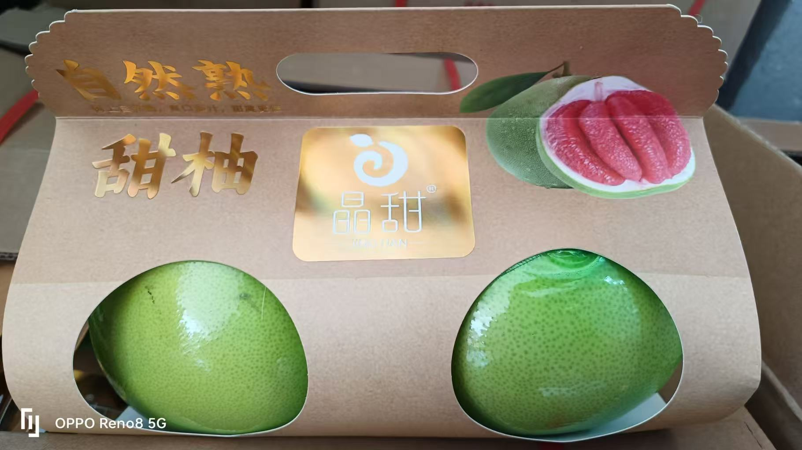

晶甜自然熟红心柚
价格：21.8元/个 或 36.8元/提/2个
精选优质红心柚，采用自然成熟方式，果肉鲜红晶莹，口感细腻酸甜。
红心柚富含丰富的维生素C，是秋冬润肺、养颜首选水果。
特点：
- 自然熟：采用自然成熟方式，无催熟剂。
- 高甜度：糖度适中，清甜爽口。
- 果肉多汁：果肉饱满，少纤维，老少皆宜。
每日新鲜配送，现摘现发，确保口感和新鲜度。

价格：21.8元/个 或 36.8元/提/2个
精选优质红心柚，采用自然成熟方式，果肉鲜红晶莹，口感细腻酸甜。
红心柚富含丰富的维生素C，是秋冬润肺、养颜首选水果。
特点：
每日新鲜配送，现摘现发，确保口感和新鲜度。